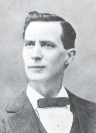

Wednesday, May the 14th, 2014
back to: title, date or indexes
Another item that appeared on Hooting Yard ten years ago today was this:
Colossal, crude, terrible and sublime, Brann opened the ears of the people by the mighty power of his untamed language, by the smashing fury of his wrath of words… Waste, futile and planless, mere howling, empty, chaotic waste, for no purpose under heaven but to serve as food for idle fancies as to what might have been—such to me is the death of Brann, and my throat chokes with sorrow and my soul is sick with vain despair.
That is a quotation from Milo Hastings' preface to Brann The Iconoclast, a collection of pieces by William Cowper Brann (1855—1898). You can read the whole thing here, or you might prefer, as I do, to repair to a deserted windswept promontory and shout those colossal, crude, terrible and sublime words at the sky, and watch birds drop down dead.

Hooting Yard on the Air, January the 11th, 2006 : “A Third Episode of Blodgett Island” (starts around 28:05)